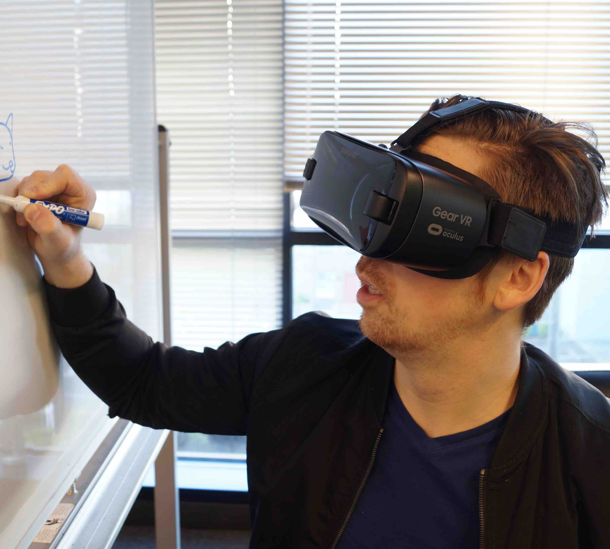
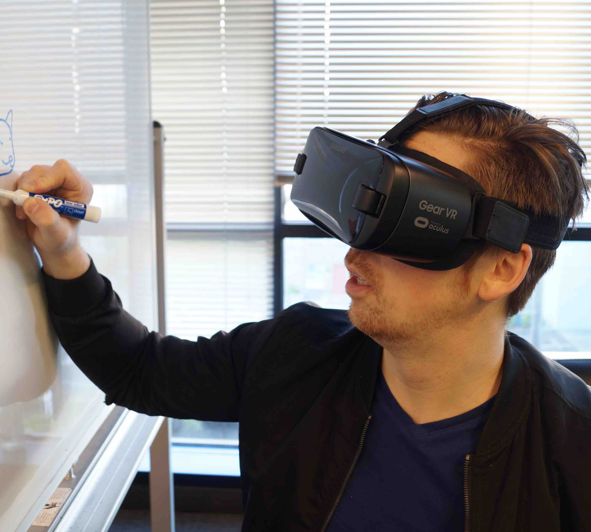

Staying home this summer because of COVID-19? Create a computer science project in just 10 weeks online
We brainstorm a project idea with you, provide a roadmap, hold 24/7 office hours, and guide you along the way. We set definitive goals and milestones to make sure you're achieving the goals you set out to accomplish.
Our customized roadmap is what makes us unique. We push you in the right direction to learn the right technologies. Once you've understood the technologies enough, we guide you through using those technologies on your project.
You can create your project in as little as 10 weeks.
 
